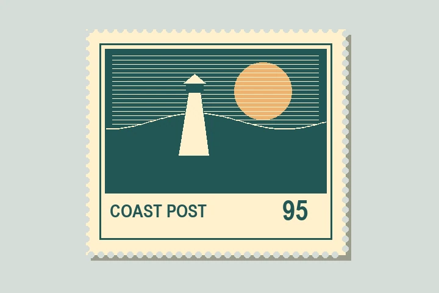
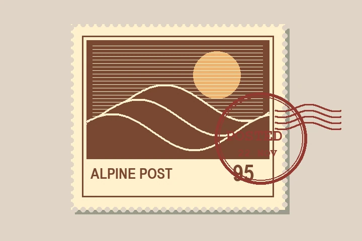
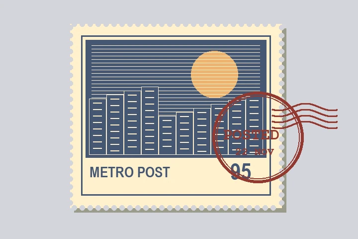

跳至内容
沿途邮局 · 卡片目录
Atlas.exe
版式总览
切换版式 ▾
同一枚邮票 · 看时间线
GitHub
POST CLUB / 旅行邮局
沿途邮册
同一条邮路，收进新票与盖销票各一枚。
全部票样
新票
盖销票

海岸邮路
新票
COAST POST
山地邮路
新票
ALPINE POST
城市邮路
新票
METRO POST
海岸邮路
盖销票
COAST POST

山地邮路
盖销票
ALPINE POST

城市邮路
盖销票
METRO POST
6 枚票样
版式笔记 · 卡片目录
阅读顺序
每张卡拥有独立图像、名称和票态，筛选后仍可单独阅读。
适用内容
商品、藏品、模板和可独立选择的条目
使用边界
卡片擅长挑选；如果读者要逐项核对参数，矩阵更省眼力。
图文混排 / 沿途邮局
v2.0.0
Windows 95 版式图鉴
全部版式
单焦点海报
轨道设计季
长文单栏
一片叶子的三次观察
非对称影墙
从街面到河岸
杂志图文混排
油墨经过的地方
卡片目录
沿途邮局
双联对照
房子的两种看法
属性矩阵
窑房器形表
主从列表
夜班试听台
纵向时间线
一张邮票的行程
空间标注图
五颗星的位置
图片查看器
×
切换票态